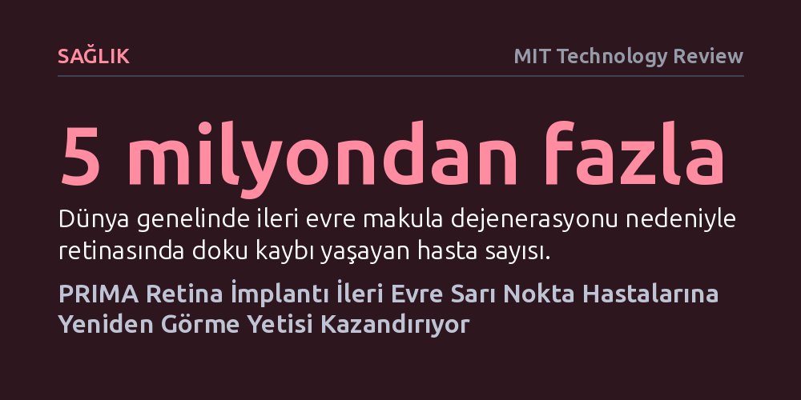

SAGLIK · MIT Technology Review · 2026-10-17
Geliştirilen PRIMA retina implantı ve kameralı gözlük sistemi, tedavisi bulunmayan ileri evre sarı nokta hastalarında merkezi görme kaybını geri çevirmeyi başardı. Klinik denemelere katılan hastaların yüzde 80'inden fazlası, sistem sayesinde yeniden kitap okuma ve telefon kullanma yetisi kazandı.
Yaşa bağlı sarı nokta hastalığının yol açtığı ve bugüne kadar kalıcı kabul edilen merkezi görme kaybının, fotoreseptörlerin yerini alan pilsiz mikroçiplerle telafi edilebileceğini kanıtlıyor.

Dünya çapında 5 milyondan fazla insan, yaşa bağlı makula dejenerasyonunun (sarı nokta hastalığı) ileri evresi nedeniyle retinasında doku kaybı yaşıyor ve görme alanının tam ortasında büyüyen kör noktalarla mücadele ediyor. Bu durum hastaların yüzleri tanımasını, yazı okumasını veya bağımsız hareket etmesini imkânsız hale getiriyor. Bugüne kadar tıp dünyasında bu hasarı tersine çevirebilecek, yitirilen görme yetisini hastalara geri kazandırabilecek herhangi bir tedavi yöntemi bulunmuyordu.
Science Corporation tarafından geliştirilen PRIMA adlı sistem, bu çaresizliği kökten değiştirmeye hazırlanıyor. Retinaya yerleştirilen mikro boyuttaki bir implant ile kameralı özel bir gözlüğü bir araya getiren sistem, klinik denemelerde çarpıcı sonuçlar verdi. Sistemin uygulandığı ve belirli bir eğitim sürecinden geçen hastaların yüzde 80'inden fazlası yeniden kitap okuyabildi, bulmaca çözebildi ve akıllı telefonlarını kullanabilir hale geldi. Temmuz ayında Avrupa'da onay alan PRIMA, şu anda ABD Gıda ve İlaç Dairesi'nin (FDA) onayını bekliyor.
PRIMA sisteminin başarısı, makula dejenerasyonunun retina üzerindeki etkisinin doğru anlaşılmasına dayanıyor. Bu hastalık gözün arkasındaki bütün sinir devresini tahrip etmiyor; sadece ışığı yakalayıp elektrik sinyallerine çeviren fotoreseptör adlı özelleşmiş hücrelerin ölümüne yol açıyor. Retinanın geriye kalan bağlantıları ve beyne giden sinir yolları ise sağlıklı kalmaya devam ediyor. PRIMA implantı, tam da bu noktada ölen fotoreseptörlerin taklidini yaparak görsel bilgiyi doğrudan sağlam sinir hücrelerine aktarıyor.
California Üniversitesi San Francisco'dan göz hastalıkları uzmanı Dr. Frank Brodie bu yaklaşımı, “Bilgiyi işlemek ve iletmek için vücudun kendi doğal işlevlerinden yararlanıyoruz,” sözleriyle açıklıyor. Cihaz yapay bir görme sistemi kurmak yerine, gözün henüz sağlam olan bipolar ve ganglion hücreleri üzerinden biyolojik görme sürecini yeniden tetikliyor.
Sistem üç ana bileşenin eşzamanlı çalışmasıyla işliyor. Kullanıcının taktığı gözlüğün ön kısmında bulunan minyatür bir kamera, çevredeki görüntüyü saniyede 30 kare hızında ve yaklaşık beş megapiksel çözünürlükte kaydediyor. Bu canlı video akışı, fiber optik kablo aracılığıyla hastanın cebinde veya masasında duran küçük bir el işlemcisine iletiliyor. İşlemci üzerinde yer alan fiziksel düğmeler sayesinde kullanıcı kontrastı, parlaklığı ve yakınlaştırma (zoom) oranını kendi ihtiyacına göre ayarlayabiliyor.
İşlemci gelen ham video sinyalini kızılötesi ışık darbelerine dönüştürerek gözlüğe geri gönderiyor. Gözlük çerçevesindeki özel bir lazer projektör, göz bebeğinden içeriye doğru 880 nanometre dalga boyunda, yani insan gözünün göremediği yakın kızılötesi ışık atımları yansıtıyor. Bu görünmez ışık huzmesi doğrudan gözün arkasında, sarı nokta bölgesine yerleştirilmiş olan implanta odaklanıyor.
Retinaya yerleştirilen PRIMA implantı toplam 378 bağımsız pikselden oluşuyor. Her bir pikselde bir elektrot ve iki adet fotovoltaik hücre yer alıyor. Bu fotovoltaik hücreler iki kritik görevi aynı anda yerine getiriyor: Hem kızılötesi ışıktan aldıkları enerjiyi elektrik akımına çevirerek sağlıklı retina hücrelerine iletiyorlar hem de güneş paneli gibi çalışarak çipin ihtiyaç duyduğu enerjiyi üretiyorlar. Bu sayede göze fazladan pil takılmasına gerek kalmıyor ve cerrahi karmaşıklık minimuma iniyor.
İmplantın ürettiği elektriksel uyarılar sağlıklı sinir hücreleri üzerinden beyne ulaştığında hasta görme merkezindeki kör noktada yeniden görsel şekilleri algılamaya başlıyor. Her ne kadar bu teknoloji doğal görmenin kusursuz bir kopyasını sunmasa da ileri evre hastaların bağımsız yaşamlarını geri kazanmalarında, yakın çevrelerini algılamalarında ve günlük işlerini tek başlarına yapabilmelerinde devrim niteliğinde bir adım teşkil ediyor.